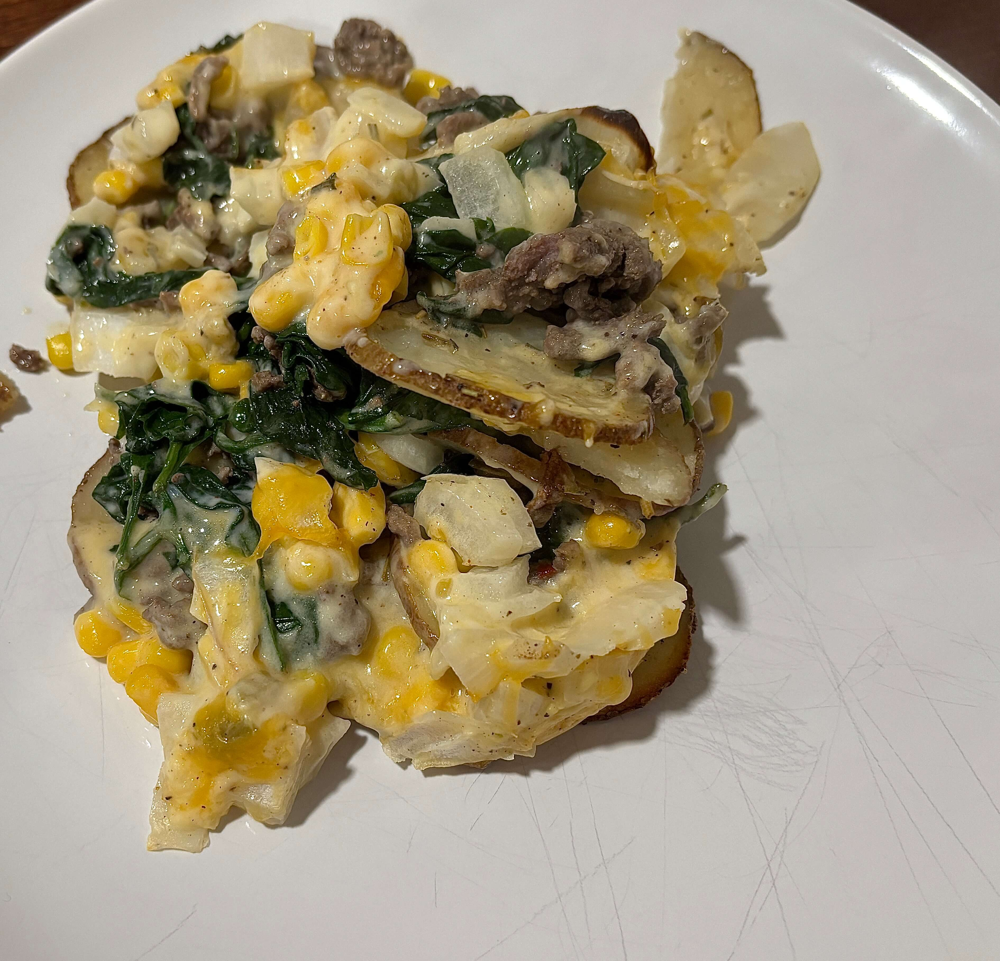

Home
Hamburger Casserole

6 servings
Prep time:10 min, cook time:50 min
Ingredients
- 4 cups thinly sliced peeled potatoes
- 2 tablespoons butter, melted
- 1/2 teaspoon salt
- 1 pound ground beef
- 1 package (10 ounces) frozen corn
- 1 can (10-3/4 ounces) condensed cream of celery soup, undiluted
- 1/3 cup 2% milk
- 1/4 teaspoon garlic powder
- 1/8 teaspoon pepper
- 1 tablespoon chopped onion
- 1 cup shredded cheddar cheese, divided
- spinach
Steps
- In a large bowl, toss potatoes with butter and salt; arrange on the bottom and up the sides of a greased 13x9-in. baking dish. Bake, uncovered, at 400° for 25-30 minutes or until potatoes are almost tender.
- Meanwhile, in a large skillet, cook the beef over medium heat until no longer pink; drain. Wilt the spinach in the same pan as the beef. Sprinkle the beef and corn over potatoes. Combine soup, milk, garlic powder, pepper, onion and 1/2 cup cheese; pour over the beef mixture.
- Bake, uncovered, at 400° for 20 minutes or until vegetables are tender. Sprinkle with remaining cheese. Bake 2-3 minutes longer or until the cheese is melted. Sprinkle with parsley if desired.